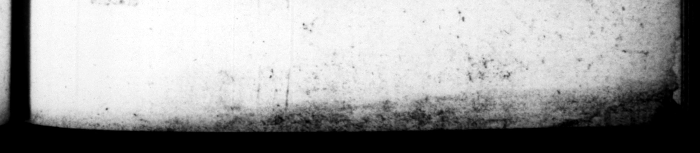

8 C CESAR. CALIGULA. impatiens more, per e — hominum Mox etiam audi— — Germaniæ, fugam . edle fag, © clafles ap: cens, ttanſmarinas certe * ſaperfururas provindias vi ctores Alpium ga ur Cimbri, n ut Senones am, : — crete — rr 4 poſtea — —— tumultuantes milites ementiendi, ipſum ſibi manus intufile, nuntio mals Pagan ' perterritum. 7 the occaſson — Veſtitu caleeatuque, & cetero habitu neque patrio . civili, ac ne vi fem em; ac per uſus eſt. See n ue indutus nulas, — x armi tus in publicum 8 Aiquan M © yoladatus : ac modo dis vel cothurnis,, tatoria cal — cities poi . gle barba ful. vero aurea men tenens, ac fuſcinam, aut caduceum, dee infigni = 8 Veneris cv pettus eſt. Tripmpha⸗ lem Pale ornatum etiam ante expeditionem e e interdum & Magalen of — — Alexandri thoracem repe- . * E conditori z. E delete liberatibus minimum erpdinent , Qoguenitt 2 pluiman atzen. It P mpg © wk ne 1 peroran{Rs © hes A J 9 3 & verba & cents Aber bant: prnuntiado q & vox; ut n co pre ardore confelteecr exaudirechee + A ron . n ehr. his. death, that he had laid winlent hands upon lf, in a fright occaſioned by neus brought bim of the defeat of bis LP . with — forval = 2 * wa in A e [Par be was handed fois log hau of the p:0phe quite over. Aud ſoon. after "upon ug of the wars breaking out | in Gm he was ne reach \ to quit Rome; and provuidi s fir the purpoſe, cumfurting him with this conſideration, that if the mem H — vittarious, and priſeſs themſerves . of: the #0ps of the Alps, as the Cimivi had „or of \the city, as the San nes; os he ſhould fill ha ve the tranſmarine pr vinces im reſerve. And for . th. — 2 I Jappaſe it was, that tb:ſ7 who killed - hem to grue aut the ſolliers were all in an uproar 5. I» be. claaths, ſhes, and ebe, parts of: his. dreſs, he 2475 tent to the 8 . his cm ry, er bis > er ſuch denique 1 | 2 arefſed up in an embroidered c uantumvis ug. & 7 code lo- rest . and\ with bracelets u F Ul os we > et ent Jed very \ 1 44 ces in 2 Say creature. appear Foy yr a ſuitable to 4 Hs: would oftentimes wich jewels, in 6 tumck with 22 Ss in 22 ia or * ſameti meg in 4 of of fe 7225 by the meaner jo _ thoſe of women, £92300! With 5 laden beard fix te his chin, holding in bir hand a1 -bult, 4 223 or. s 2 2 ks of diſtin im bælonging to the g Sometimes 100 he was ſen in = 225 of Venus. Ie ware 800 er Cc the triump ef. — ore ſp te) 1 5 0 the thorax F< * takes out . tay. $3, of ebe Mer ul gige, be be mod Fre 2 e with 4% | ly to lence, being wo ah elog au? 2 +4 * in u —— e peciualiy words His pronuniation was ſo vehement, and Bi anire ſo frong, that b coald not ſtanu id in 2 I 6, and wa heard at a groat diſtancr: ben he came — F barangut, by 2 — 42
